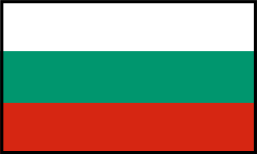
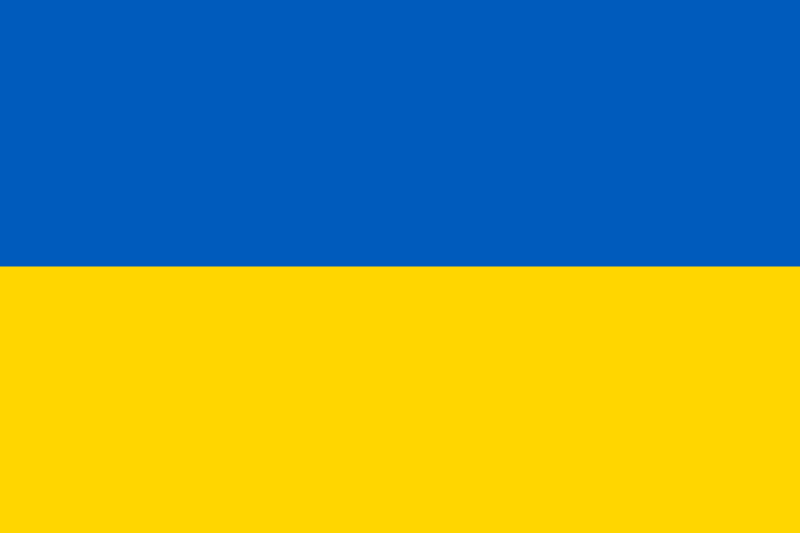
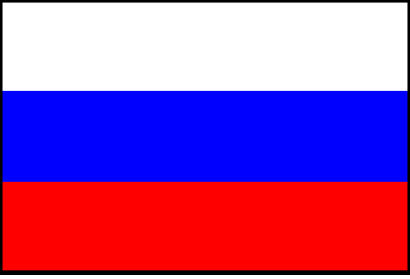
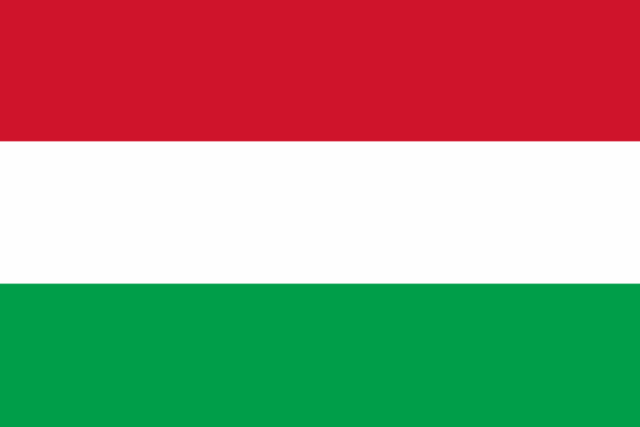

Actuala poziţie geopolitică a României
Daca poziţia geografică a unei ţări este fixa, stabilită de jocul forţelor naturii şi exprimată în anumite jaloane naturale (unitaţi de relief, ape etc.), poziţia geopolitică este variabilă în timp, uneori chiar pe termen forte scurt, în funcţie de modificarea anumitor factori socio-economici şi politici.
Cunoastem cu toţii poziţia geografică a ţarii noastre. Dar care este oare pozitia geopolitică a României? Cel mai bun răspuns l-a dat, în urma cu peste trei veacuri, cronicarul umanist Grigore Ureche
(c. 1590-1647), care, referindu-se la Moldova, deşi afirmaţia sa poate fi extinsă făra teama de a greşi la întreaga Românie, a semmalat ca „se află situată în calea tuturor răutaţilor". Aşa cum avea sa dovedească din plin istoria principatelor române, separat, şi a României, în ansamblu.
In fond, se poate pune întrebarea de ce prezinta oare atât de multă important partea, regiunea in care este plasata o tara sau alta, in speta partea Europei careia ii apartine România. Raspunsul este, de fapt, destul de simplu: pentru ca din aceasta situare decurg o serie de avantaje - sau, din contra, dezavantaje - de securitate, politice,economice si de alta natura. De pilda, la granita dintr milenii,
Romania se afla plasata geopolitic:
1.-la intersecţia axelor geoeconomice vest-est (Europa Occidentală-spaţiul ex-sovietic) şi nord-vest-sud-est (Germania şi Europa Centrală-Asia Mica şi Orientul Mijlociu);
2.-la intersecţia unor axe geoeconomice în curs de consolidare: axa mărilor (Marea Caspica-Marea Neagră-Marea Mediterana) şi axa fluviilor şi canalelor (Rin-Main-Dunare), legând Marea Nordului cu Marea Neagră;
3.-în zona de contact a structurilor euroatlantice (Uniunea Europeană şi NATO) cu spaţiul ex-sovietic (în principal cu Federaţia Rusă), ceea ce poate fi un element de fragilitate, aşa cum au demonstrat-o evenimentele din Georgia (2008), Crimeea şi Ucraina de Est (2004) şi Ucraina regiunea Donbas (2022).
Litigii teritoriale
Bulgaria
Prin Tratatul de la Neuilly (unul dintre tratatele sistemului de la Versailles, semnat după Primul Război Mondial) din 27 noiembrie 1919, încheiat între puterile Antantei şi Bulgaria, aceasta din urmă pierde o serie de teritorii, între care şi Dobrogea sudica (numită şi Cadrilater), atribuită de drept României. Unele forţe politice bulgare cer revizuirea acestui tratat, pe care îl consideră nedrept. De exemplu, Forumul Democratic Bulgar a cerut, la mijlocul ultimului deceniu al secolului al XX-lea, atunci când acestea se aflau in opoziţie, atât preşedintelui si premierului ţării, cât şi parlamentului să ia măsurile necesare pentru „refacerea justiţiei istorice in Balcani." Oricum, guvernanţii bulgari n-au ridicat niciodată oficial vreo problemă teritorială, cele două ţari derulându-şi relaţiile în baza Tratatului de prietenie, colaborare si bună vecinătate semnat la Sofia la 27 februarie 1992.
Ucraina
Ucraina are litigii teritoriale cu România şi Rusia. În Ucraina sunt incluse teritorii româneşti din sudul si nordul Basarabiei, precum si nordul Bucovinei şi ţinutul Herţa. Ucraina nu doreşte condamnarea Tratatului Ribbentrop-Molotov şi nu recunoaşte existenţa unor probleme de retrocedare de teritorii. Cu toate acestea, în 1997 s-a semnat tratatul bilateral, singura problemă rămanând Insula Şerpilor. Deşi aparţinea de drept României prin Tratatul de Pace de la Paris sin 1947, aceasta a fost cedată Uniunii Sovietice în 1948 prin acordul semnat între Petru Groza pri-ministrul României, şi Veaceslav Molotov, ministrul sovietic de externe. După destrămarea URSS, i-a revenit Ucrainei, iar potrivit actualului tratat insula aparţine de drept acesteia.
Insula Şerpilor
Insula, un mic petic de uscat (17 ha; 602 m lungime si 440 m lăţime:circumferinţa-1973m, altitudinea maximă 40 m), se află în Marea Neagră, în largul Deltei Dunării, la 45 km est de oraşul Sulina.
A fost cedată Uniunii Sovietce prin protocolul (din 4 februarie 1948) semnat de Petru Groza, prim-ministrul României, şi de Veaceslav Molotov, ministrul sovietic de externe, şi predată cu proces verbal în 23 mai acelaşi an. Dacă retrocedarea insulei n-a fost solicitată de România, în schimb problema demarcării platoului continental al Marii Negre în zonă a fost demarată împreuna cu Uniunea Sovietica în 1967, ultimele negocieri având loc 20 de ani mai târziu. După semnarea Tratatului de bază, în 1997, cu Ucraina (forţaţi fiind de aderarea la NATO), ţara în componenţa căreia a revenit după dezmembrarea Uniunii Sovietice (1991), cele două state au convenit că, dacă nu se ajunge la o soluţie comună de delimitare a platoului continental, să se adreseze Curţii de Justiţie de la Haga, ceea ce România a şi făcut.
Disputa dintre România şi Ucraina privind Insula Şerpilor a ajuns la Curtea Internaţională de Justiţie de la Haga, ţara noastră declanşând procesul înca din anul 2004, în calitate de reclamant. În lunile august şi septembrie 2008 s-a desfăşurat procesul, cu audierea celor două parţi. Nu era judecat statutul juridic al insulei, care intră în categoria revendicarilor teritoriale, ci delimitarea strictă a platoului continental şi a zonelor economice exclusive. Cele două ţări au avut, în această privinţă, poziţii total diferite, Ucraina considerând acest petic de uscat (doar 17 ha; 0,17 km pătraţi) insulă, iar România stâncă, în acest ultim caz neavând dreptul de a poseda platoul continental şi zona economică exclusivă. Pentru a-i conferi atribute de insulă, autoritaţile ucrainene au deplasat circa 150 de persoane pentru a locui pe aceasta stâncă lipsită de apă potabilă, canalizare, curent electric etc. Mai mult, au construit câteva magazine, un oficiu poştal, un muzeu arheologic, un hotel (care nu avea canalizare) şi chiar au deschis o filială bancară.
Miza celor 12 000 km pătraţi de platforma continentală a devenit şi mai mare prin prisma zăcămintelor de hidrocarburi, estimate la circa 10 milioane de tone de petrol şi în jur de 100 de miliarde m cubi de gaze naturale.
Curtea Internationala de Justiţie s-a pronunţat în 3 februarie 2009(cu o hotărâre adoptată în unanimitate de cei 15 judecatori, caz rar întâlnit), acordându-i României jurisdicţie si drepturi suverane asupra a circa 80% (79,3%) din suprafaţa de 12 200 km pătraţi disputată cu Ucraina (respectiv 9 700 km pătraţi). În acest fel, tribunalul a considerat că Insula Şerpilor nu influenţează linia de demarcaţie.
Canalul Bâstroe
Bâstroe este o ramificaţie secundară a Dunării, care se desprinde din principalul braţ al acesteia, Chilia, in aval de Periprava, vărsându-se în Marea Neagră. Fiind impracticabil pentru navigaţie, autoritaţile ucrainene au hotărât să-l amenajeze, în principal prin lucrări de adâncire (de la 2,5 metri la aproape 6 metri), pentru ca să poată naviga vasele de mare tonaj. Lucrările au început în 2001, canalul fiind înaugurat oficial (deşi nu era terminat) în 24 august 2004, cu ocazia zilei nationale a Ucrainei, în ciuda protestelor României si ale multor foruri internationale (inclusiv din domeniul protecţiei şi conservarii mediului), care avertizau asupra unui dezastru ecologic în Delta Dunării. Ca urmare a acestor presiuni, Ucraina a sistat lucrările în anul 2008. Proiectul este controversat întrucât afectează ecosistemul Deltei Dunării (declarată Rezervaţie a Biosferei şi inclusă pe Lista Patrimoniului UNESCO), fiind denunţat nu numai de România, ci şi de multe organizaţii neguvernamentale de protecţie a mediului, întrucât încalcă mai mule convenţii internaţionale în domeniu.
Federația Rusă
România n-a parafat multă vreme Tratatul de bază cu Rusia, întrucat, printre altele, aceasta nu era de acord sa dezavueze Pactul Ribbentrop- Molotov prin includerea în tratat a unei declaraţii politice. Şi aceasta în ciuda faptului că, în decembrie 1989, Sovietul Suprem al Uniunii Sovietice a declarat nulitatea pactului. Aici s-au adăugat şi aspectele legate de retrocedarea tezaurului românesc. Toate acestea au dus la amânarea semnării tratatului bilateral, deşi s-a vehiculat în repetate rânduri că tratativele s-au incheiat. Unul dintre aceste momente a fost participarea ministrului de externe al Rusiei, Evgheni Primakov, la „Forumul pentru Cooperare Economică în zona Mării Negre" din 28 aprilie 1996. Dar partea româna ţinea foarte mult la înserarea paragrafului referitor la dezavuarea Pactului Ribbentrop-Molotov dintr-un motiv foarte clar: se apropiau alegerile parlamentare şi prezidenţiale din ţara noastra şi, după cum se ştie, semnarea în 1991, de către preşedintele Iliescu, a Tratatului de bază cu Uniunea Sovietica - practic cu puţin înainte de destrămarea acesteia - fară includerea unei asemenea prevederi a fost foarte criticată în ţara. După mai multe amânari, România rămânând singura ţară est-europeana care nu semnase un astfel de tratat bilateral cu Rusia, în 2003 acesta este parafat, insă făra rezolvarea celor două mari probleme, dezavuarea Pactului Ribbentrop- Molotov si tezaural românesc, pentru acesta din urma constituindu-se o comisie.
Ungaria
Problema relaţiilor bilaterale româno-ungare este marcată de situaţia minorităţii maghiare, care a înregistrat o creştere treptată şi controlată a „temperaturii" de la cald la fierbinte, părând a se pregati de un „punct de topire" care să permită turnarea, cu ajutor international pregătit din timp, a unor noi tipare in această parte a Europei. Multiplicarea şi concertarea tot mai eficientã a acţiunilor menite să „apere" drepturile minorităţilor maghiare şi să „îndrepte nedreptăţile istorice" au fost foarte evidente pe parcursul ultimului deceniu al secolului trecut. Ungurii chiar reuşiseră să convingă anumite cancelarii şi centre de studii strategice că, „dacă geografic Dunărea ajunge la Marea Neagră, politic ea se varsă în lacul Balaton" [...].Relațiile româno-ungare sunt relațiile externe dintre România și Ungaria. România are ambasadă la Budapesta și Ungaria are ambasadă la București. În context, relațiile bilaterale dintre cele două țări poartă amprenta interacțiunilor istorice ale celor două popoare, până în secolul al XIX-lea. Au fost apoi formalizate odată cu înființarea Statului român modern în a doua jumătate a secolului al XIX-lea. În răstimpuri, relațiile româno-ungare au fost tensionate, fiind marcate de chestiunea Transilvaniei, care în urma dezmembrării Austro-Ungariei (1919) a fost atribuită Regatului Român prin Tratatul de la Trianon.
   Bulgaria Ucraina Rusia Ungaria